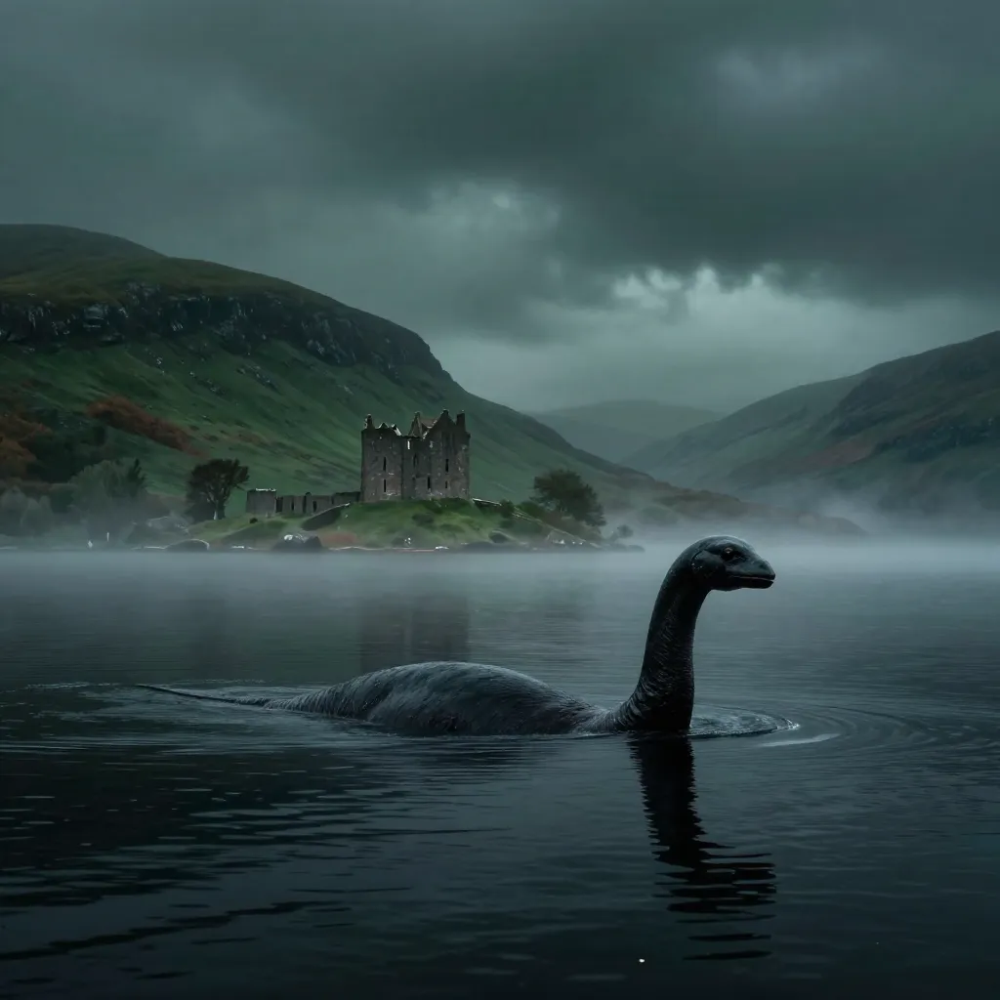

Loch Ness Monster: An Old Legend, Sonar Contacts, and the Photograph That Fooled the World

A whale in the loch
On April 15, 1933, Aldie Mackay and her husband were driving beside Loch Ness, in the Scottish Highlands. She said that she saw a whale-like creature in the water. The Inverness Courier printed the story on May 2, and it spread.
That year, a new road had been built along the loch, and more visitors came. On July 22, a man named George Spicer and his wife were driving there. They saw a large creature with a long neck cross the road in front of their car and plunge into the water.
Spicer called it “the nearest approach to a dragon or pre-historic animal that I have ever seen in my life.” Some researchers now doubt that his story was true. But at the time, the newspapers took notice.
So the Loch Ness Monster was born, or so it seemed. Yet the real story starts much earlier. Let us look at the place first.
The deepest, darkest water
Loch Ness is the largest body of fresh water in Britain by volume. It holds about 7.5 billion cubic meters of water, which is more than all the lakes in England and Wales put together. It is 23 miles long and up to 754 feet deep. Glaciers carved it during the last Ice Age. It lies along the Great Glen Fault, a long crack in the rock that runs across Scotland.
The water is also very dark. It is stained by peat, which is old, rotted plant matter that makes water brown. You can see very little below the surface. Great depth and dark water make a full search very hard. They also give the imagination room to fill in what the eyes cannot see.
Nessie has become one of the most famous cryptids in the world. A cryptid is a creature that some people say exists but that science has not proven. The question is not whether people have seen something in Loch Ness. They have, many times. The question is what they saw.
A saint and a beast
The old story of the loch begins around the year 565. An Irish monk named Saint Columba is traveling through the Scottish Highlands. By the River Ness, he meets a group of men burying a friend. The man had been swimming, they say. A water beast attacked him.
Columba sends one of his own followers into the river. The beast rises from the water, roaring, with its jaws wide open. Columba raises his hand and makes the sign of the cross. He commands the monster to leave, and it flees.
An abbot named Adomnan of Iona wrote this story down about a century later, in his Life of Columba. It is the earliest known written account of a creature near Loch Ness. But it is a tale about a saint, not an eyewitness report. Still, it shows that people in the Highlands told stories about the water for a very long time.
In the 1930s, the stories finally came with pictures.
Pictures of a long neck
On November 12, 1933, Hugh Gray took what is said to be the first photograph of the monster. It was blurry. It showed a dark, long shape on the water. Some people think that it shows a dog with a stick. Skeptics said that it was a dog, an otter, or a swimming deer. Believers saw a creature. This set a pattern that would repeat for years. Unclear pictures convinced the people who already believed, and nobody else.
Then came the picture that changed everything. A London doctor named Robert Kenneth Wilson said that he took a photograph on April 19, 1934. The Daily Mail printed it two days later. It showed a long, thin neck rising from the water. The creature looked like a plesiosaur, a sea reptile from the age of the dinosaurs.
People called it “the Surgeon’s Photograph.” It appeared on postcards, book covers, and magazine fronts around the world. For about sixty years, it was the best visual evidence for the monster.
It was a hoax. In 1994, a report named Marmaduke Wetherell, a big-game hunter, as the man behind it. The Daily Mail had hired him to find the monster. Earlier, in December 1933, he had found big footprints on the shore. Experts said that they were made with a dried hippo foot.
The story says that he then asked his son Ian and his stepson Christian Spurling, a sculptor, for help. They built a toy submarine with a carved neck and head. Wilson was a respected surgeon, and the story says that he agreed to lend his name so that people would believe it. A small model on the water, seen from far away, can look huge.
The tale came from Spurling himself, near the end of his life. Sources disagree on exactly when he told it.
If the photographs proved nothing, perhaps sound waves could do better.
Listening with sonar
Sonar uses sound waves to find objects under water. From 1958 onward, scientific expeditions used it to scan the depths. Several found large, moving objects that they could not explain.
In 1960, an aeronautical engineer named Tim Dinsdale filmed a hump-shaped object moving across the surface. In 1966, the Joint Air Reconnaissance Intelligence Centre studied the film. It said that the object was “probably animate,” which means alive. Experts now think that its estimates were too bold. Dinsdale was so sure that he gave up his engineering career. He spent the rest of his life hunting the monster.
The biggest survey was Operation Deepscan in 1987. About twenty boats with sonar sailed in a line across the loch. Some reports say twenty boats and others say twenty-four. They found three underwater targets that nobody could explain right away. One strong echo came from about 590 feet down, near Urquhart Bay.
The results were interesting but not final. The contacts could have been schools of fish, seals, or other known animals. A BBC expedition in 2003 used 600 separate sonar beams. It found no sign of any large animal in the loch.
So scientists tried something new. They would look for the monster’s DNA.
What the water remembers
In 2019, Professor Neil Gemmell led a large DNA survey of Loch Ness. He is a geneticist at the University of Otago in New Zealand. His team took 250 water samples from many places around the loch.
From the samples they pulled out environmental DNA, or eDNA. DNA is the code inside every living cell. All living things shed bits of it into the water around them. Reports say that the team found DNA from about 3,000 species in all.
The study found no reptile DNA at all. Gemmell said that a giant reptile like a plesiosaur is very unlikely. It found no sturgeon DNA, no catfish DNA, and no shark DNA.
What it did find was a lot of eel DNA, at almost every place that they tested. Gemmell said that this did not prove that giant eels exist. But he said that giant eels remain a possible idea.
Four ideas, one loch
People have offered several ideas about what they saw. The first is the plesiosaur, a prehistoric sea reptile that somehow survived. The 2019 study found no reptile DNA, so this idea is now very unlikely.
The second is the giant eel. Gemmell’s study raised it, because the loch holds so much European eel DNA. The third is the sturgeon, a big fish. Its humps fit some descriptions, but no sturgeon DNA was found.
Next come swimming deer. Their heads and necks above the water could look like a creature with a long neck. Then there are waves, floating logs, and tricks of the light. These can make odd shapes on the surface.
Most scientists think that the people who saw something were mistaken. The human brain is a pattern-matching machine. It sees faces in clouds and animals in waves, especially when it expects them.
Is Nessie worth more as a mystery?
The Loch Ness Monster is no longer just a mystery. It is also a business. A 2018 study by Gary Campbell, who runs a Nessie fan club, said that Nessie tourism is worth about 41 million pounds a year to Scotland.
This creates an odd puzzle. Some people say that the monster is worth more as a mystery than as an answer. When a study fails to find Nessie, the news says “Nessie still not found.” It does not say “Nessie does not exist.” A blurry photograph or a strange sonar echo is called “new evidence,” not an unclear result. So the cycle of guessing goes on.
Let us go back to that road beside the loch in 1933. What do we know now? The best photograph was a hoax. The sonar results were unclear. The DNA survey found no sign of a plesiosaur or a sturgeon. It found eels, lots of them. And there are people, hundreds of them, who truly saw something that they could not explain.
The power of the legend does not depend on a monster. It depends on the possibility of one. In a world that is mapped and measured down to the last square meter, there might still be something in the deep that we have not found. So what is down there?
References & Further Reading
Wikipedia: Loch Ness — Length, depth, volume, Great Glen Fault, peat and murky water
PBS NOVA: Birth of a Legend — Sonar expeditions, Dinsdale's 1960 film, Operation Deepscan
Mental Floss: Cryptid Currency — Tourism value of about 41 million pounds, Gary Campbell
📚 Recommended Reading: What Do We Know About the Loch Ness Monster? by Steve Korté (on Amazon) — As an Amazon Associate, we earn from qualifying purchases.
Editorial note: It is certain that the Surgeon's Photograph was staged and that the 2019 DNA survey found no reptile DNA. Whether a strange animal lives in the loch cannot be proven, and the old Columba tale is a legend. See our Editorial Policy.